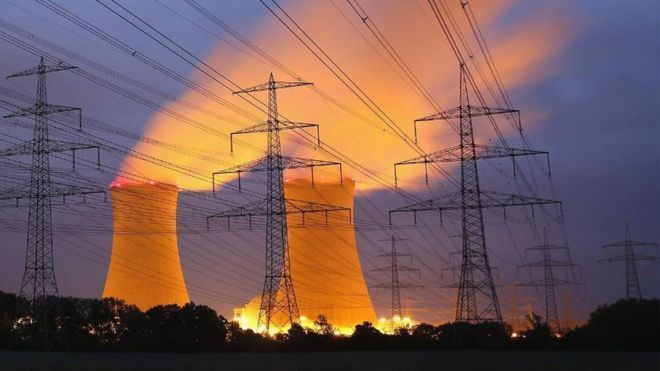
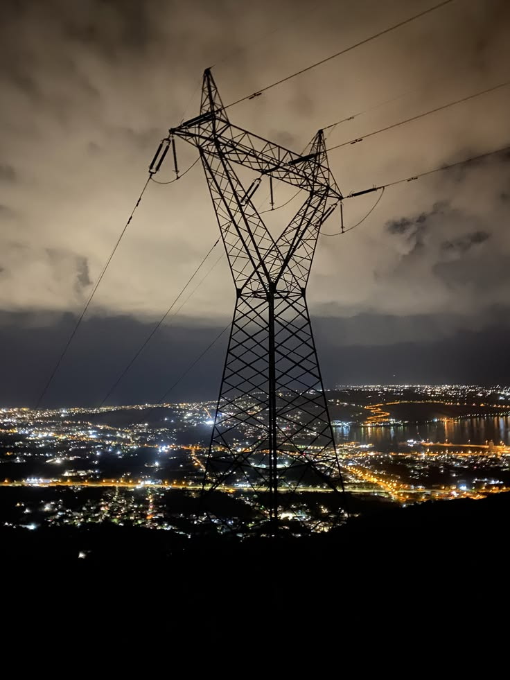
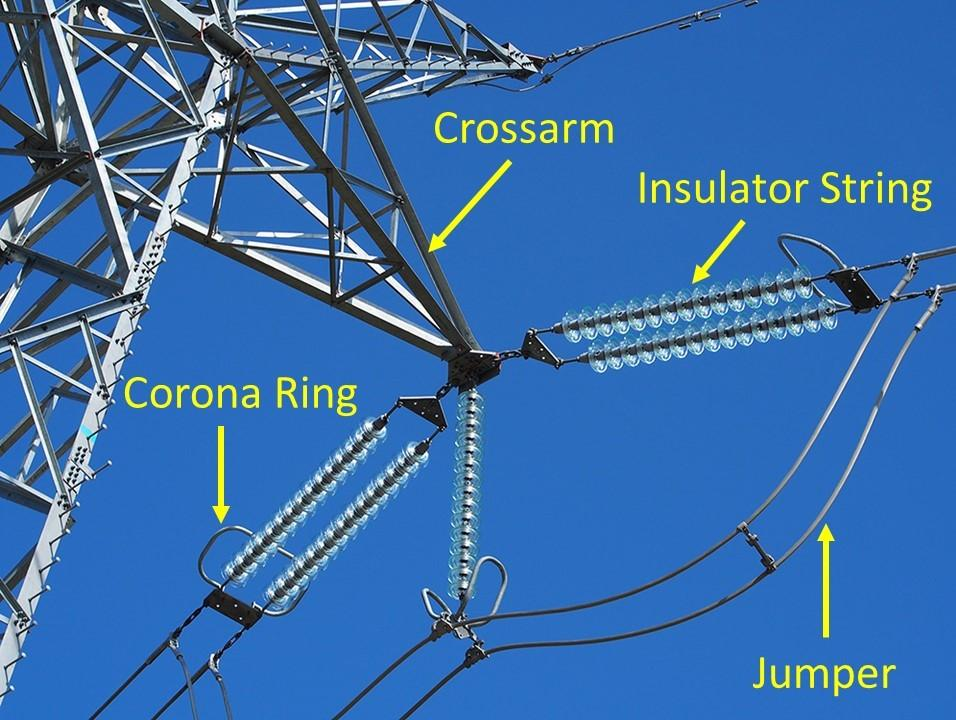
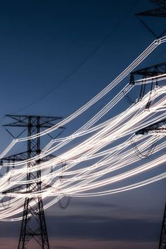
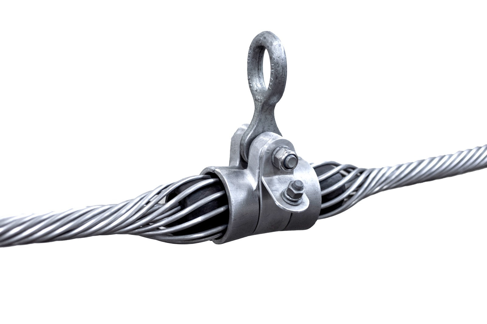
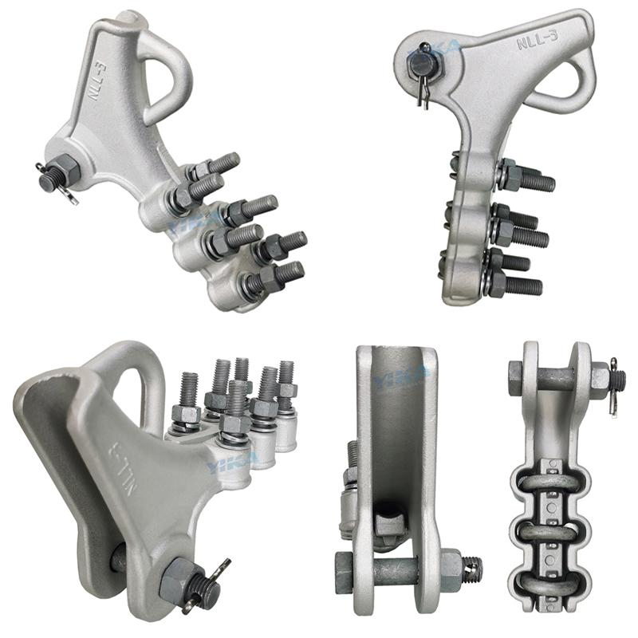
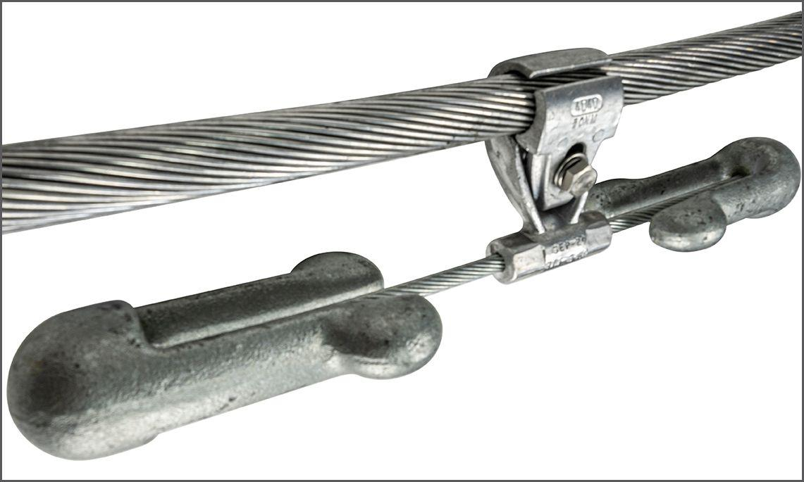
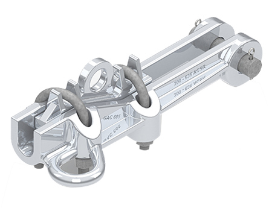
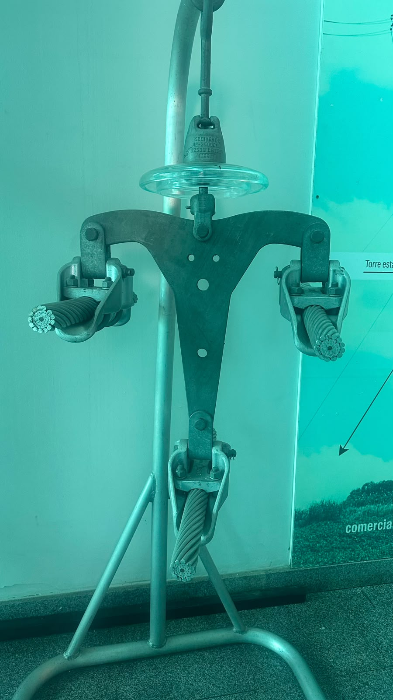
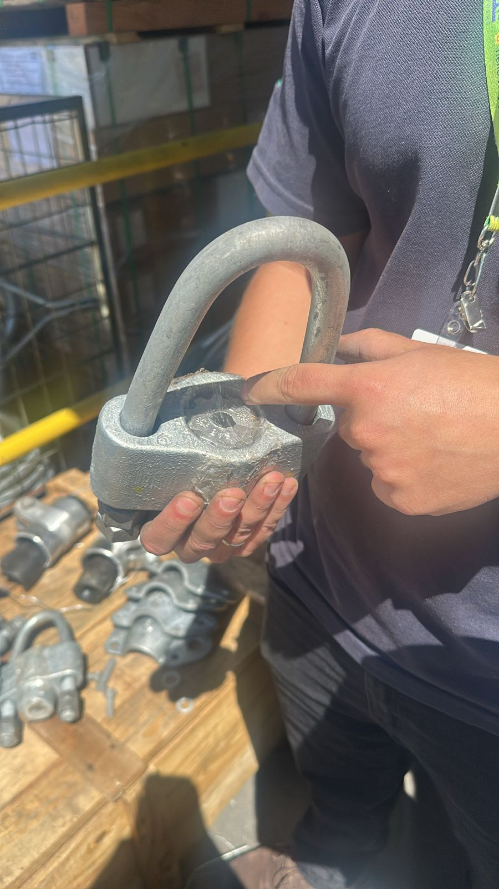

As torres de transmissão fazem parte da nossa paisagem muito mais do que imaginamos. Estão presentes nas estradas, nos campos, nas montanhas e até mesmo próximas às grandes cidades. Construídas principalmente em estruturas metálicas, elas têm uma missão fundamental: sustentar os cabos que transportam energia elétrica por longas distâncias. Mas, apesar de parecerem estruturas simples quando observadas de longe, existe muito mais por trás delas. Cada torre é formada por diferentes componentes, projetados para garantir resistência, estabilidade e segurança ao sistema elétrico. E é justamente nos detalhes que encontramos as partes mais interessantes dessa história.

É a sustentação de toda a linha de transmissão. Seus perfis metálicos são organizados para suportar os esforços causados pelo peso dos cabos, vento e outras condições ambientais.

São componentes responsáveis por isolar eletricamente os condutores da estrutura metálica, evitando que a corrente elétrica seja conduzida para a torre.

São os cabos responsáveis por transportar a energia elétrica ao longo das linhas de transmissão, conectando diferentes regiões.
Se as torres são responsáveis por sustentar as linhas de transmissão, os fittings (ferragens e acessórios) são fundamentais para conectar, fixar e complementar esse conjunto. Esses componentes fazem a ligação entre diferentes elementos da linha, como os condutores, isoladores e estruturas de sustentação. Mesmo sendo menores quando comparados às torres, desempenham funções essenciais para o funcionamento e a segurança do sistema.
| Componente (Fitting) | Onde é Aplicado | Função Principal |
|---|---|---|
| Grampos de Suspensão | Estruturas intermediárias (alinhamento) | Sustentar o cabo condutor de forma flexível, permitindo que ele se movimente levemente com o vento. |
| Grampos de Ancoragem | Extremidades, terminais ou mudanças de direção | Segurar e traçar a tração mecânica total do cabo, fixando-o firmemente à estrutura. |
| Amortecedores | Próximo às pinças de fixação | Absorver e dissipar a energia gerada pela vibração do vento nos cabos, evitando a fadiga e ruptura do metal. |

Grampos de Suspensão

Grampos de Ancoragem

Amortecedores



Quer entender mais sobre as geometrias e aplicações?
Conhecer os Tipos de Torres ➔